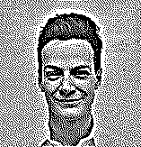
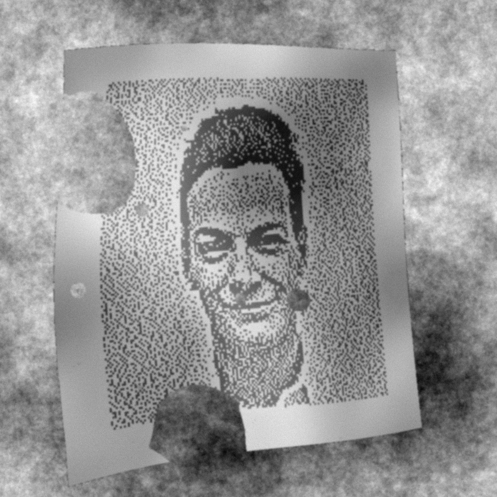

Il me semble qu'il faudrait faire le simulateur complet. Une fois qu'il est fait, on l'aurait une fois pour toutes et on pourrait l'utiliser pour d'autres projets SURYS. Input : une image -générer un message texte aléatoire de la longueur prescrite -le coder avec une redondance suffisante (récupérer un code de codage vectoriel standard?) -l'insérer dans le dithering de l'image -dans l'ordre: lui ajouter quelques anomalies destructives (Axel et Thibaud ont un simulateur d'anomalies locales style rayures), la déformer, la rendre floue et la bruiter -détecter la grille et décoder On peut en discuter quand vous voulez; le sujet me paraît très intéressant, en fait pour nous entraîner à la stéganographie. Amitiés, JM
For our encoding/decoding experiments we work with the full text of Shakespeare sonnets. We use it as a periodic, infinite stream of bits, of period 96Kb or 771024 bits (starting at sonnet CXXX, one of the most famous). Notice that the ASCII encoding of text is very inefficient; in practice we would use a compressed stream; this is just for verification.
The carrier image is a black and white photo, that we reduce to a small size and binarize by a linear retinex filter and Floyd-Sternberg dithering:
|  | |||
feynman.png |
a0.png |
a.png |
a-sonnet.png
|
ppsmooth feynman.png|downsa v 3|plambda 'x,l -1 *'|blur q 0.2|qauto - a0.png dither a0.png a.png mdither encode a.png a-sonnet.png sonnets.txt
This image has enough space to encode one sonnet and the title of
the next one. It can be
recovered with the program mdither decode:
mdither decode a-sonnet.png
Sonnet CXXX My mistress' eyes are nothing like the sun; Coral is far more red than her lips' red; If snow be white, why then her breasts are dun; If hairs be wires, black wires grow on her head. I have seen roses damask'd, red and white, But no such roses see I in her cheeks; And in some perfumes is there more delight Than in the breath that from my mistress reeks. I love to hear her speak, yet well I know That music hath a far more pleasing sound; I grant I never saw a goddess go; My mistress, when she walks, treads on the ground: And yet, by heaven, I think my love as rare As any she belied with false compare. Sonnet CXXXI
Now that we can encode and decode data into binary images, we will see if this data is recoverable after printing the image into paper and scanning it/taking a photo. For that, we propose the following algorithm that tries to simulates a realistic acquisition process with various distortions.
export GETPIXEL=255 ntiply 4 a-sonnet.png|plambda zero:800x800 - "x y(-90,-70) -50 320 qe" -o a2.png plambda a2.png randu | blur l 170 | qauto - biases.png plambda a2.png biases.png "x .6 * y .4 * +" -o a3.png
H="1 0 100 0 1 100 0.0002 -0.0001 1" homwarp -o 3 -i "$H" 1000 1000 a3.png a4.png
a4.png
sepranfield.sh 1000 1000 2 g 200 g 14 1 | backflow - a4.png a5.png
a5.png
plambda a5.png randg | blur q 0.5 | qauto -p 0 - bg.png plambda a5.png "0 >" | morsi cross closing - mask.png plambda mask.png a5.png bg.png if -o a6.png
a6.png
blur gauss 1.5 a6.png | plambda - "randg 5 * +" -o dirty.png
dirty.png
plambda bg.png 'randp 1.2 ^' |\
blur q 0.25 |\
plambda - mask.png "y x x%O92 < and" |\
plambda - a6.png bg.png if |\
blur g 1.5 |\
plambda - "randg 5 * +" -o dirtier.png
dirtier.png
Recovery of the image data consists in inverting all the steps of the simulation algorithm. This is easier said than done. To simplify the problem, we start with the easy case of no deformation (so that an homography is able to recover the exact position of the grid) and no holes (so that there is no missing data).
In this ideal case, we need to start with this image (without deformation nor
holes):
easy.png
plambda a4.png "0 >" |\
morsi cross closing |\
plambda - a4.png bg.png if |\
blur gauss 1.5 |\
plambda - "randg 5 * +" -o easy.png
which, given the correct homography, can only be recovered as good as this:
recov.png
homwarp -o 3 "$H" 800 800 easy.png recov.pngcan you find a grid of size 157x163 in here? Since we now the exact sizes, let us see how well can we recover the bits in this case (a retinex of the zoomed-image helps to discriminate binary pixels):
plambda zero:628x652 recov.png "x y(90,70)" -o clip.png ntiply 4 a-sonnet.png ga-sonnet.png unset GETPIXEL plambda clip.png 'x,l -1 *'|blur -z q 0.3|plambda - '0 > 255 *' -o ret-clip.png downsa e 4 ret-clip.png | plambda '0 > 255 *' | ntiply 4 - dec-clip.png plambda dec-clip.png ga-sonnet.png "= 255 *" -o clip-dif.png
As long as a sizeable percentage of the bits coincide, which seems to be the case, we can recover the encoded information.
Note: The experiment shown above maybe uses an exaggerated value for the "blur" parameter. If we set this parameter, and the noise, to zero we recover exactly the original image. A realistic value for this parameter can be only estimated by performing real experiments with printers and cameras; however, thanks to this simulator, we understand the effect of varying this parameter on the quality of the watermarking.
The information inside the holes is lost. Thus, the coding of the data must satisfy to properties:
The second property is very important because the beginning of the image may be missing. The standard theory of error-correcting codes solves these two problems very well, so that our only task is to be able to recover as many bits as possible from the image, and feed these bits to a standard error-correcting algorithm.
{kind=link}
{kind=link}
{kind=link}
{kind=link}
{kind=link}
{kind=link}
{kind=link}
{kind=link}